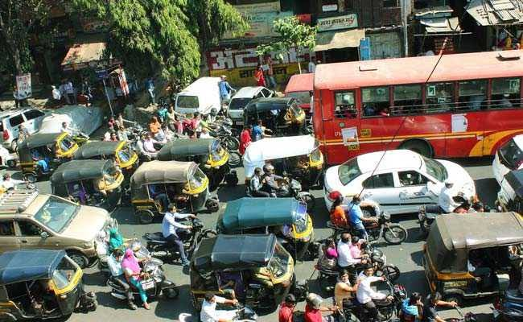

Noise pollution, also known as environmental noise or sound pollution, is the propagation of noise with harmful impact on the activity of human or animal life. The source of outdoor noise
worldwide is mainly caused by machines, transport and propagation systems. Poor urban planning may give rise to noise pollution, side-by-side industrial and residential buildings can result
in noise pollution in the residential areas. Some of the main sources of noise ¡n residential areas include loud music, transportation noise, lawn care maintenance, nearby construction, or
young people yelling (sports games). Noise pollution associated with household electricity generators is an emerging environmental degradation in many developing nations. The average
noise level of 97.60 dB obtained exceeded the WHO value of 50 dB allowed for residential areas. Research suggests that noise pollution is the highest in low-income and racial minority
neighborhoods. Documented problems associated with urban environment noise go back as far as ancient Rome.

High noise levels can contribute to cardiovascular effects in humans and an increased incidence of coronary artery disease in animals, noise can increase the risk of death by altering
predator or prey detection and avoidance, interfere with reproduction and navigation, and contribute to permanent hearing loss. While the elderly may have cardiac problems due to noise,
according to the World Health Organization, children are especially vulnerable to noise, and the effects that noise has on children may be permanent. Noise poses a serious threat to a
child’s physical and psychological health, and may negatively interfere with a child’s learning and behavior.
Home Page Different Types of Pollution Land Pollution Water Pollution Air Pollution